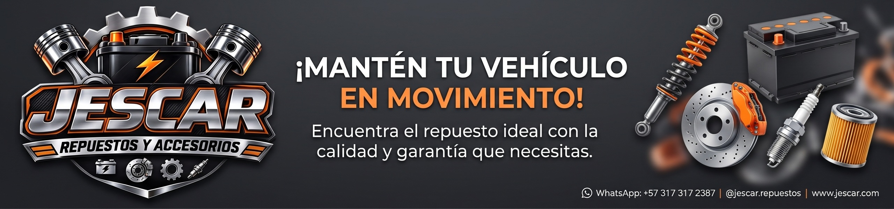

Marcas Disponibles
Ofrecemos una amplia gama de baterías para todo tipo de vehículos.
- Mac
- Willard
- Bosch
- ACDelco
Batería Destacada

Conoce más sobre el fabricante en su sitio web oficial (se abre en nueva pestaña).

Especialistas en baterías y repuestos para tu vehículo.
Ofrecemos una amplia gama de baterías para todo tipo de vehículos.
Conoce más sobre el fabricante en su sitio web oficial (se abre en nueva pestaña).